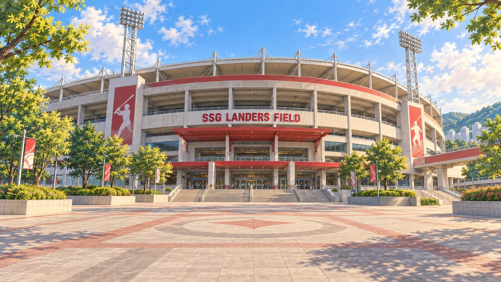
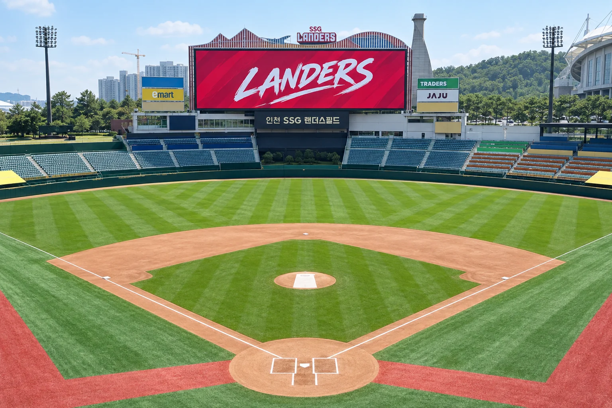
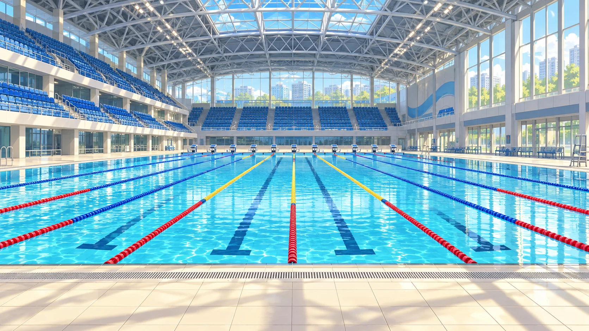

눈으로 찾아봐요
관광 안내 출처 ↗

✦수학의 빛
장소의 특징을 담은 창작 일러스트
SSG랜더스필드 & 문학박태환수영장

이번 정류장은 인천SSG랜더스필드입니다.
버스가 정류장에 도착하고 있어요.경기는 잠시 멈춰 있어요. 공의 위치를 움직이며 타구를 살펴보세요.
공이 가장 높아진 곳을 찾을 수 있나요?
큰 그래프에서 꼭짓점을 골라 빛을 찾아보세요.
큰 원 A·B·C 중 하나를 누르고, 최고 높이를 골라 주세요.
그래프에서 가장 높은 점을 눌러요.
2 · 최고 높이 고르기x는 수평 거리, y는 높이를 나타내요.
민우와 서연이 매스투어 버스에 오릅니다.
SSG랜더스필드 → 문학박태환수영장
민우와 서연은 두 발견을 품고 다시 버스에 올랐어요.

꼭짓점의 좌표를 읽고
거리와 높이의 뜻을 구별했어요.

제곱근의 뜻과 부호를 살피고
여덟 게이트에 도전했어요.